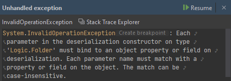
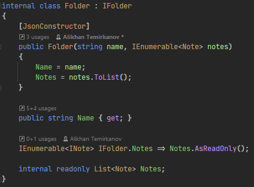
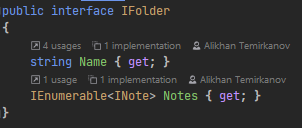
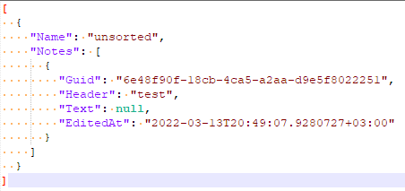
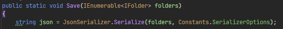
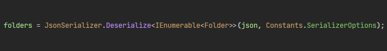
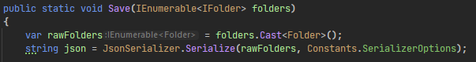
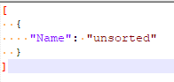
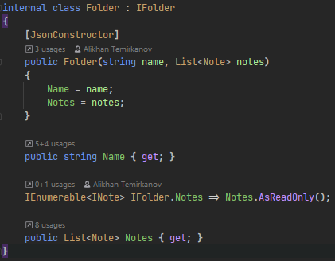

14.03.2022
Переписывал вчера структуру классов в
krvnotes
и наткнулся на странный баг при сериализации и десериализации
класса Folder, описывающего папку с заметками.
Приложение устроено так, что после любого действия оно сохраняет состояние в JSON, а при открытии загружает все папки и находящиеся в них заметки из этого JSONа.
В какой-то момент я очередной раз нажимаю F5 и вместо гуя вижу исключение десериализации.

Чево случилось-то
Судя по сообщению, проблема в том, что десериализатор не смог сопоставить каждый из
параметров конструктора класса Folder с его свойством. Однако дальше ничего не ясно
, потому что параметры конструктора называются name и notes, а свойства класса -- Name
и Notes. Вроде всё должно работать.

Класс Folder

Интерфейс IFolder
PropertyNameCaseInsensitive
выставлен в true, оба свойства публичные - в чём проблема?
Первая мысль, пришедшая в голову -- наверно, дело в том, что сериализатор не смог сериализовать
явно реализованное свойство Notes, записал в JSON только свойство Name,
а теперь на десериализации не понимает, что передавать во второй параметр конструктора.
Чтобы убедиться в этом, я открыл JSON.

Как ни странно, в JSONе всё в порядке. Всё отлично сериализовалось, вот они Notes
После многочасового мучения я наконец заметил, что мой код для сериализации и для десериализации немного отличается.


Найди System.OverflowException отличий
Конкретнее говоря, сериализую я IEnumerable<IFolder>,
а десериализую в IEnumerable<Folder>. Я обратил на это внимание и решил
попробовать привести всё к одному типу. Десериализовывать в интерфейсы нельзя, поэтому вместо этого я решил
сериализовать класс.

Я добавил каст к Folder перед сериализацией...

... и вот что я увидел в JSON.
Здесь и стало ясно, что сериализатор STJ игнорирует явно реализованные свойства интерфейсов при работе с классами.
Всё это время сериализация работала только потому, что на вход отправлялись объекты IFolder,
которые для сериализатора содержали просто два публичных свойства. Но при попытке десериализации в класс
сериализатор не находил публичное свойство для параметра notes и кидал исключение.
Всё, что мне надо было сделать -- превратить поле Notes в свойство ([JsonInclude], по идее,
тоже бы сработал, но мне не хотелось тащить ещё один атрибут), и всё заработало как надо.
Нажимаем F5 и получаем ровно то же исключение. Тратим ещё час и выясняем: помимо того, что у каждого параметра и соответствующего свойства
должны совпадать имена, также в точности должны совпадать их типы. Если тип параметра -- IEnumerable<Note>,
а тип свойства -- List<Note>, работать ничего не будет, даже если для десериализации используется конструктор.
К сожалению, в exception message про точное совпадение типов не сказано, поэтому на выяснение этой детали ушло ещё достаточно времени. Oh well.

Финальный вид класса Folder